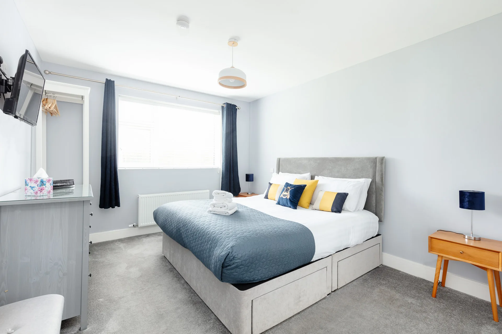
Principal bedroom
King bed, soft linens and a quiet place to recharge.

A private retreat on the Dingle Peninsula
A private Irish cottage for up to eight guests, with sea air, mountain views and an easy 15-minute walk into Dingle.
Check availabilityBook direct
Live availability, secure checkout and direct booking powered by Lodgify.

Ryder Cup 2027 accommodation
The Ryder Cup returns to Ireland at Adare Manor from Monday 13 to Sunday 19 September 2027. The build-up runs from 13–16 September, followed by three competition days between Europe and the United States from Friday 17 to Sunday 19 September.
Milltown Cottage has four bedrooms for up to eight guests, private parking and an easy walk into Dingle town. A private driver can be arranged for return travel on Ryder Cup days, subject to availability and the tournament’s official transport arrangements.
Spectators travelling by road will use official park-and-ride locations and dedicated shuttles to the venue. Allow extra time on event days and check the official transport guidance before travelling.
Ryder Cup tickets are not included with accommodation and must be secured separately through official ticket channels. Milltown Cottage is independently operated and is not affiliated with the Ryder Cup or Adare Manor.
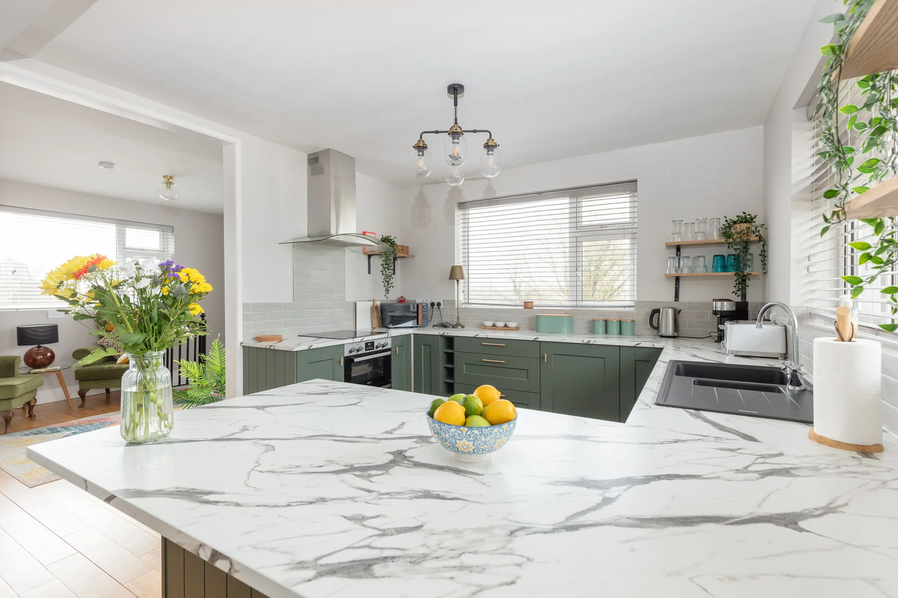
The cottage
Hidden from the road in a peaceful setting, Milltown Cottage combines the comfort of a modern family home with the wild beauty of the Dingle Peninsula.
Gather around the kitchen table, unwind in the generous living spaces, or step outside into the private garden and take in the changing Kerry light. Dingle’s pubs, restaurants, harbour and colourful streets are close by, while the cottage remains calm and secluded.
Guest guide
Thank you for staying in our wonderful house. A home has stood on this land in our family for generations, and my grandfather built the house you are staying in during 1970.
A family home
Both houses on the property belong to our family. The smaller house may be occupied by other guests or by my mother, so you may see friendly neighbours coming and going during your stay.
Sheehys, Farran Redmond, High Road, Dingle, Co. Kerry, V92 Y0F3.
If you are taking a taxi, it can be easier to ask for “Laura Sheehy’s house in Milltown” or “the houses by Milltown Cottages.” Most local drivers know the family and the property.
When using Google Maps, enter the Eircode V92 Y0F3 to be brought directly to the house.
The keys are kept in a lockbox beside the back door. Your lockbox code will be sent by email the day before check-in.
Two very friendly cats live on the property. If a door is left open, they may come inside and settle down for a nap. You are welcome to let them visit, but please make sure both cats are outside before you leave the house.
They may also insist that they are starving. Do not believe them—they are fed twice daily! We avoid overfeeding them so they will still hunt rodents, although they generally prefer sleeping for 18–20 hours a day.
Fast Wi-Fi is available throughout the cottage. Scan one of the Wi-Fi QR codes in the house to connect, or find the password on the back of the router upstairs in the TV room.
The heating and hot water are set on timers. Heating is divided into two zones: Zone 1 covers the ground floor and Zone 2 covers upstairs. The heating runs each morning from 7:00–9:00am.
If you need additional heating or hot water, press the relevant boost button. This switches it on for one hour. Hot water takes approximately 20 minutes to heat and the boost provides a full tank.
The downstairs thermostat is in the bedroom; the upstairs thermostat is in the principal bedroom. The house has a high energy rating, warms quickly and the thermostats can be used to adjust the temperature.
Additional towels and bath mats are available in the utility room. Extra bed linen is stored in the drawers beneath the beds.
The bins are beside the oil tank at the back of the house. Please separate general rubbish and recycling.
Glass should be taken to the bottle bank behind SuperValu in Dingle town.
For general questions, please contact your host through the Airbnb app. The host is typically in Los Angeles, so the time difference may delay a response.
For an emergency or urgent out-of-hours assistance, text Samantha on 086 368 0208 or Laura on 087 671 5395.
Check-out is at 10:30am. Before departing, please ensure both cats are outside and return the house keys to the lockbox.
To lock the door:
The lockbox code is never displayed publicly. It will be sent to you by email the day before check-in.
The maximum capacity is 8 guests. Please ensure your reservation shows the correct number of guests before arrival. Bookings include up to 6 guests; an additional charge applies for each guest after that.
Parties and large gatherings are not permitted at the property.
Guests are not permitted to bring pets or other animals to the property.
Do not place glass in the recycling bin. Please take all glass bottles to the town recycling centre behind SuperValu, across the road. A €100 fine applies if glass is found in the recycling bin.
A €175 cleaning and soiling charge per bed applies when a bed is left in a heavily soiled condition.
Although the house is new, Dingle’s sewers are not. A blockage can leave the house completely without water for up to 48 hours while the council clears the pipes. Please place every type of wipe in the bin.
Take a look around
Step inside the cottage and explore its bright bedrooms, spacious living areas and welcoming kitchen in this short property tour.
Check availabilitySleep well

King bed, soft linens and a quiet place to recharge.
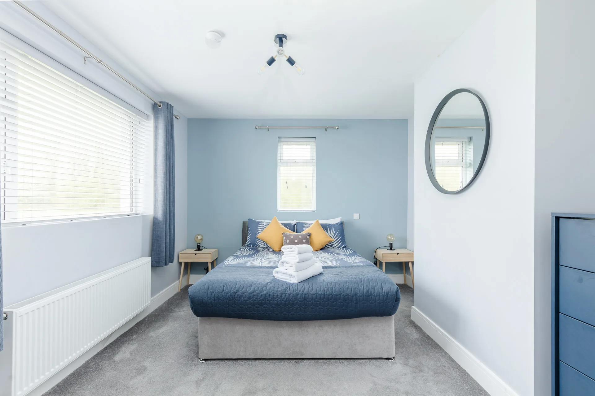
A bright, restful room with space for two guests.

A warm room for two with a useful workspace.

Two single beds for children, friends or extended family.
Gallery
A closer look at the rooms, details, gardens and panoramic setting that make Milltown Cottage such a special base in Dingle.


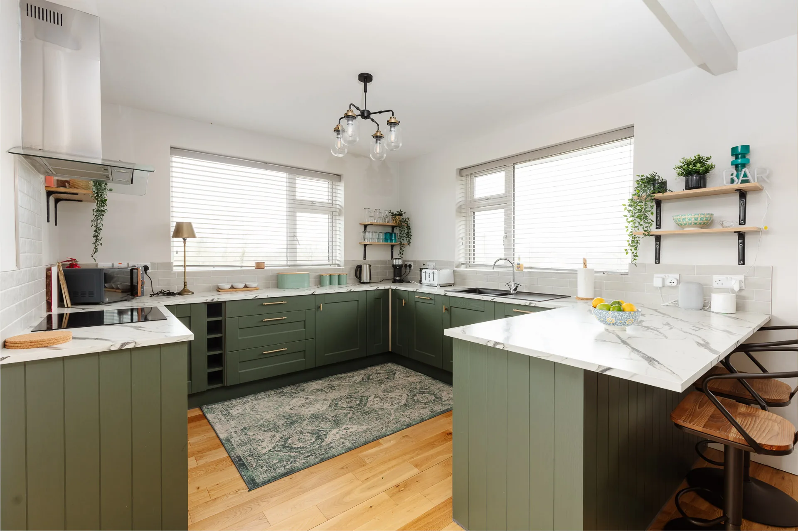

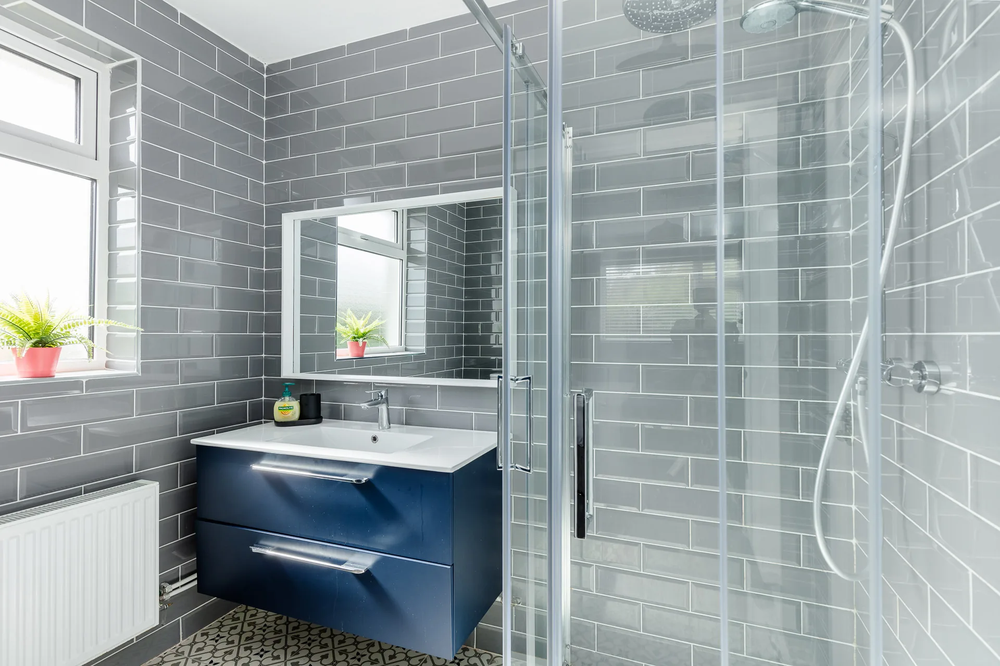
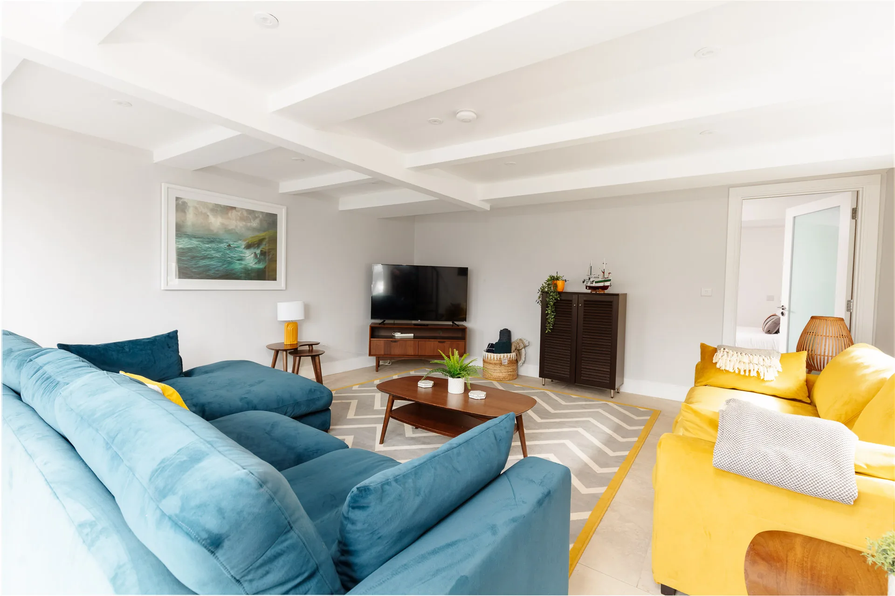
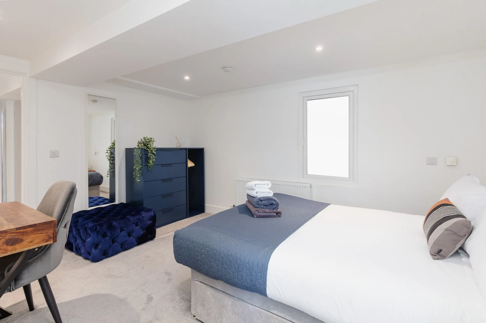


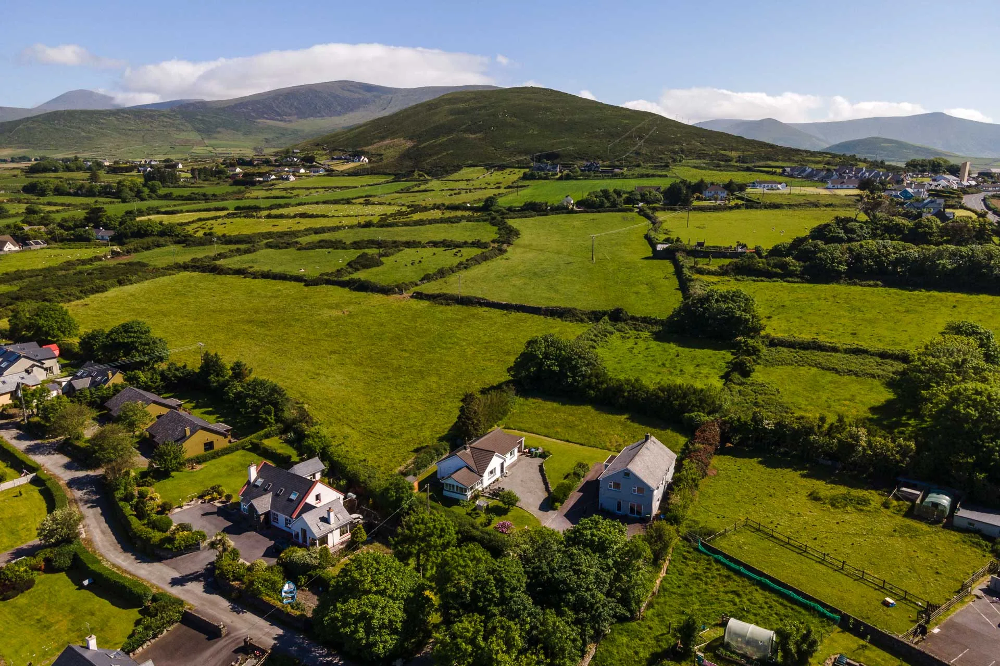
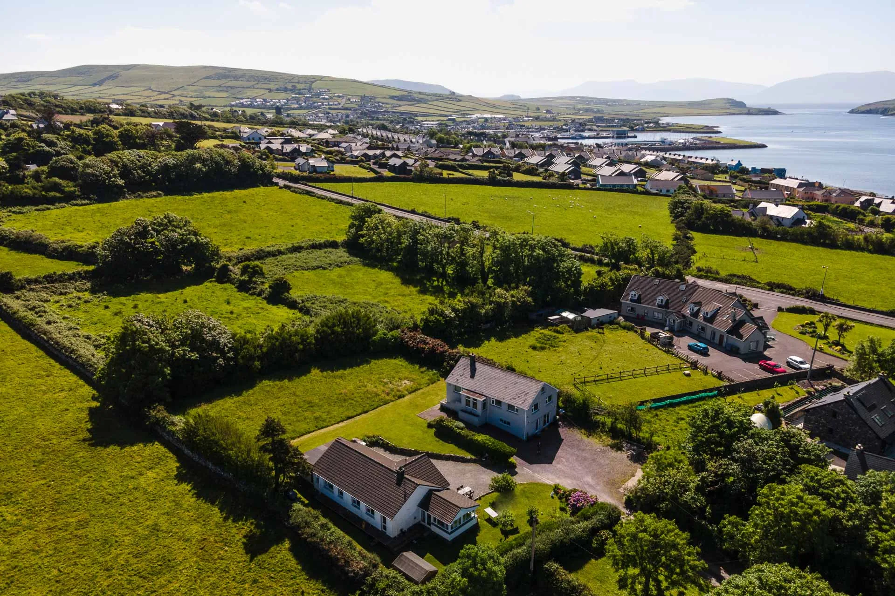
About Dingle
Dingle — Daingean Uí Chúis — is a working harbour town at the heart of Corca Dhuibhne, one of Ireland’s most distinctive Gaeltacht regions. Irish language, traditional music, fishing, farming and storytelling are not museum pieces here; they remain part of everyday life.
The town balances that heritage with excellent food, independent galleries, craft shops, coffee, local brewing and a famously welcoming pub culture. Beyond the harbour, the peninsula opens into Atlantic cliffs, sandy beaches, mountain roads, ancient monuments and the offshore Blasket Islands.
Milltown Cottage places you close to the energy of town while preserving the quiet and space that make West Kerry feel like a true escape.
Discover the peninsula
From colourful streets and welcoming pubs to sweeping Atlantic scenery, this short film offers a glimpse of the landscape and atmosphere waiting beyond the cottage.
Explore the local guideSee & do
These are some of the experiences we recommend most to guests. Opening times and seasonal services can change, so it is always worth checking directly before setting out.
Coastal drive
Follow one of Ireland’s most spectacular coastal roads past Ventry, ancient stone forts, the Blasket Islands viewpoint and the famous winding path at Dunquin Pier.
Plan the drive →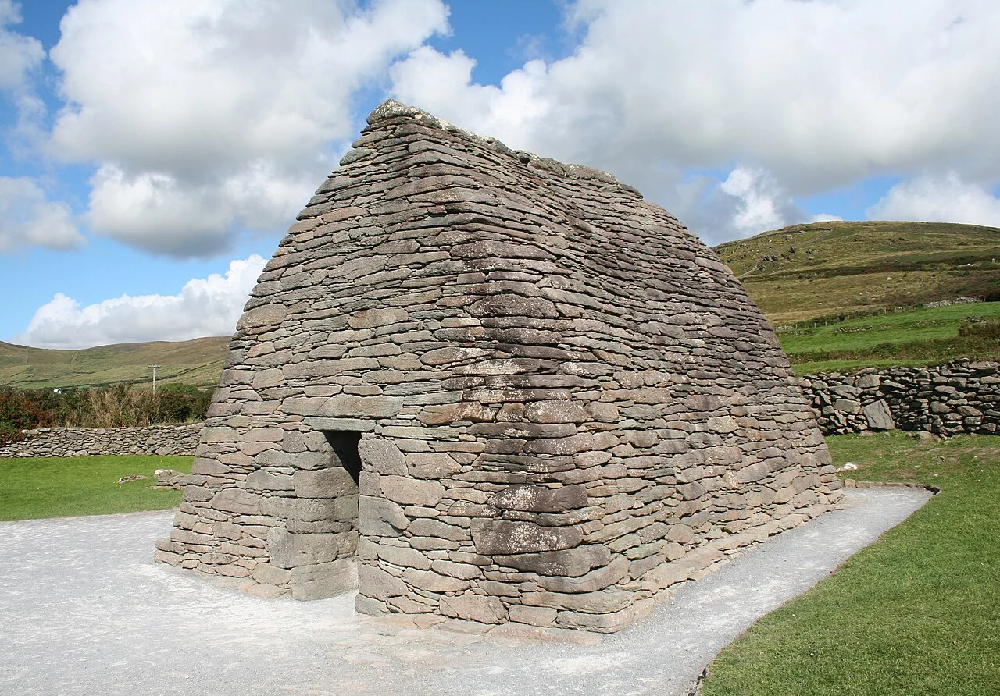
Heritage
Visit the remarkably preserved stone oratory and explore a landscape rich in early Christian and archaeological sites.
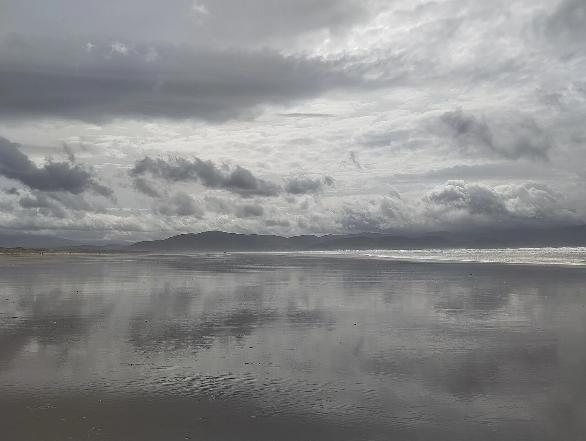
Beach day
A vast sweep of sand for long walks, surfing, swimming and views across Dingle Bay toward the Iveragh Peninsula.
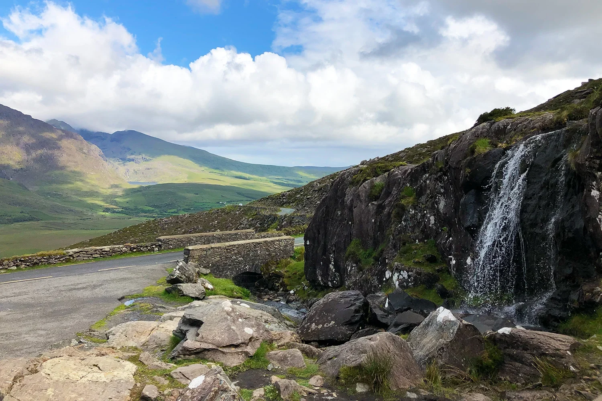
Scenic route
Take the high mountain road north from Dingle for expansive views, waterfalls and one of the peninsula’s most dramatic drives.
Local map
Use this guide to orient yourself around Dingle town and the peninsula. The map opens in OpenStreetMap, while each recommendation below links directly to directions.
Around town
Spend an afternoon browsing independent shops, follow the waterfront, then settle into one of Dingle’s famous pubs for live music, a pint and a relaxed evening atmosphere.
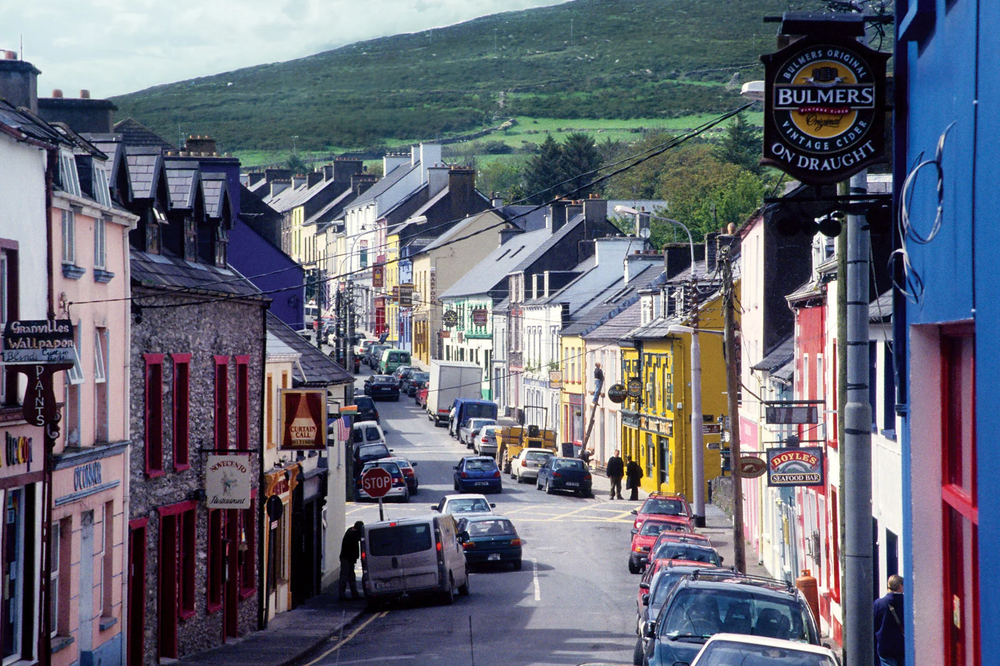
Town centre
Start with a stroll around the harbour, then explore the town’s shops, cafés, galleries and colourful facades.
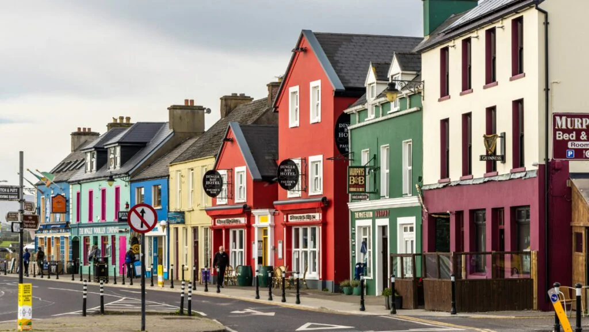
Evening plans
Dick Mack’s, Foxy John’s and the town’s other beloved pubs are ideal for live music, conversation and a true Dingle night out.
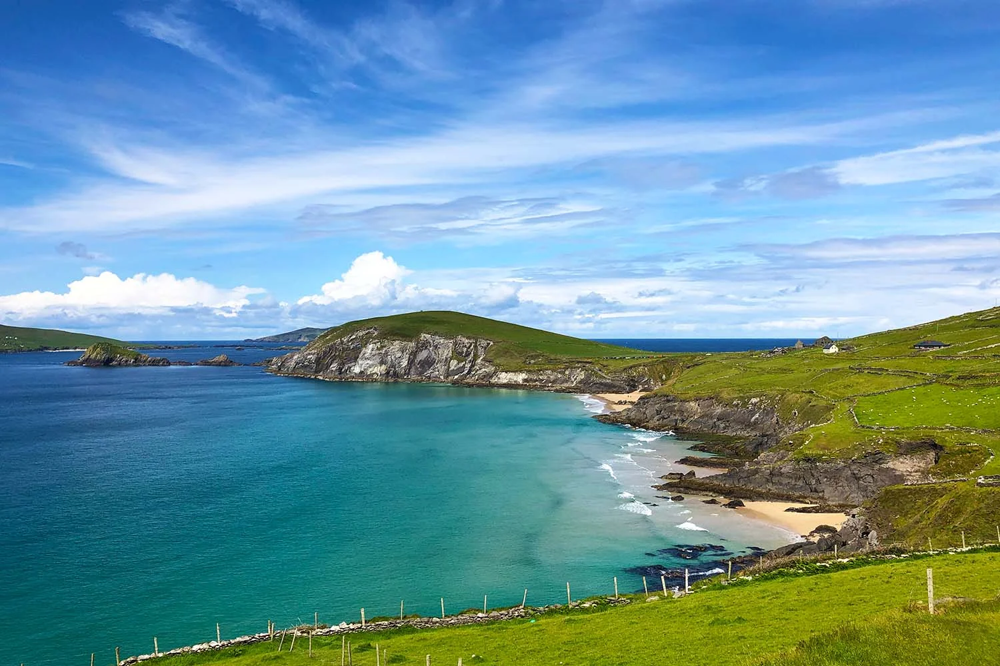
Nearby scenery
Milltown Cottage gives you easy access to the town while keeping the quiet, open feel of the peninsula all around you.
Eat & drink
Dingle’s food scene is one of the peninsula’s great pleasures. Book ahead for dinner during busy periods, and check seasonal opening days before travelling.
A celebrated harbour-side restaurant serving seafood only, with the menu determined by the day’s catch.
Inventive small plates built around local produce, seafood, foraged ingredients and modern West Kerry flavours.
Family-caught seafood from the Flannery family’s own boats, served informally in the centre of town.
Excellent coffee and baked treats in a relaxed, independent café that works perfectly before a day exploring.
Dingle-made ice cream using Irish ingredients, including milk from the rare Kerry cow.
A lively bar and restaurant for lunch, dinner, live sport and regular weekend entertainment.
Best pubs
An old-school Main Street pub with flagstone floors and a wonderfully unhurried atmosphere.
Directions →A tiny candlelit purple pub known for its warmth, intimacy and easy conversation.
Directions →A dependable option for live sport, food, a covered beer garden and Saturday music.
Website →Travelling from the United States
Milltown Cottage gives families and groups a private base on the Dingle Peninsula, with four bedrooms, two bathrooms, a full kitchen, laundry facilities and parking for four cars.
“Beautifully designed, very close to town and wonderfully quiet.”
“Everything we needed was there. Comfortable, spacious and perfect for our group.”
“A serene setting, fantastic views and an ideal base for exploring the peninsula.”
Plan your stay
Practical details for families and friends considering a self-catering stay in Dingle.
The cottage accommodates up to eight guests across four bedrooms, with generous shared living spaces and two bathrooms.
The walk from Milltown Cottage into Dingle town takes approximately 15 minutes. Central Dingle is also about five minutes away by car.
Yes. The four-bedroom layout, private garden, kitchen, laundry facilities, parking and proximity to family attractions make it a practical base for a Dingle family holiday.
Yes. Guests have free private parking for up to four cars and fast Wi-Fi throughout the cottage.
The cottage includes a fully equipped kitchen, spacious dining and living areas, bed linens, bathrooms, laundry facilities, a private garden and self check-in.
No. Guests are not permitted to bring pets or other animals to the property.
Yes. Use the availability search on this website to see live dates and complete a secure direct booking through Lodgify.
Milltown Cottage has a two-night minimum stay. For longer-stay rates, email michealsheehy@gmail.com.
Kerry Airport is the closest airport to Milltown Cottage and Dingle.
Yes. Bus Éireann Route 275 operates between Dingle and Tralee via Camp. Check the current timetable before travelling.
Arrival and self check-in instructions are provided with your confirmed reservation before your stay.
Your Dingle stay starts here